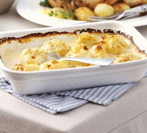

Cauliflower Cheese

Ingredients
- 1 large cauliflower (leaves cut off), broken into pieces
- 500ml milk
- 4 tbsp flour
- 50g butter
- 100g strong cheddar, grated
- 2-3 tbsp breadcrumbs, if you have them
Method
- Bring a large saucepan of water to the boil, then add 1 large cauliflower, broken into pieces, and cook for
5 mins – lift out a piece to test, it should be cooked.
- Drain the cauliflower, then tip into an ovenproof dish. Heat oven to 220C/200C/gas 7.
- Put the saucepan back on the heat and add 500ml milk, 4 tbsp flour and 50g butter.
- Keep whisking fast as the butter melts and the mixture comes to the boil – the flour will disappear and the
sauce will begin to thicken. Whisk for 2 mins while the sauce bubbles and becomes nice and thick.
- Turn off the heat, stir in most of the 100g grated cheddar cheese and pour over the cauliflower. Scatter
over the remaining cheese, and 2-3 tbsp breadcrumbs if using.
- Put in the oven and bake for 20 mins until bubbling.